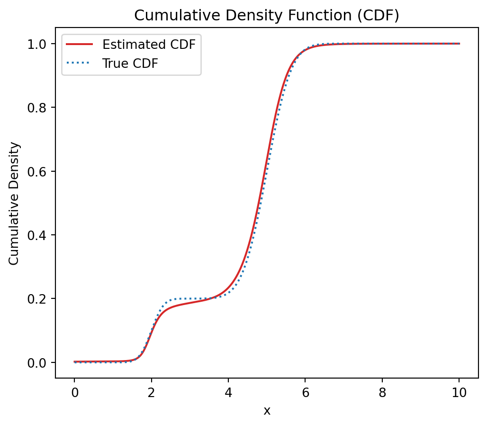
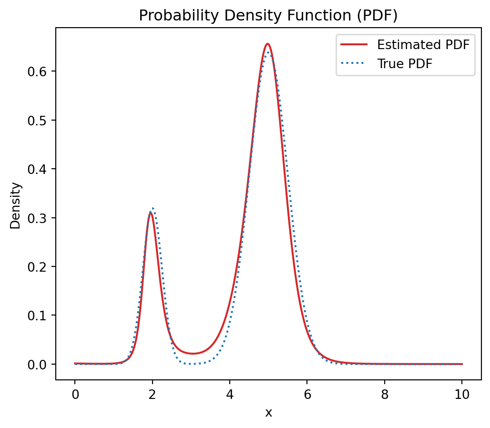

# for sampling
import random
import numpy as np
from scipy import stats
# for visualization
import matplotlib.pyplot as plt
# for constructing, learning, using NNs
import torch
import torch.nn as nn
import torch.optim as optimNeural Networks for Probability Density Estimation
Deep Learning
Python
Probability Density Estimation
Post description
TO DO: CODE AN BEZEICHNUNGEN IN FORMELN ANPASSEN
Introduction
The impressive capabilities of neural networks in typical regression and classification tasks are widely known. Recently, I came across a paper about a lesser known but mathematically very interesting application of neural networks that was written some years ago. The paper shows how neural networks can be used for estimating the probability density function of a random variable (Magdon-Ismail and Atiya 1998). Before implementing it from scratch in Python, I will first describe the general approach.
General Approach
Let \(X\) be a continuous random variable with unknown probability density function (PDF) \(f_X\) and unknown cumulative density function (CDF) \(F_X\). Given a set of \(n \in \mathbb{N}\) i.i.d. realizations of \(X\), \(x_i, i=1, \dots, n\), the goal is to estimate \(f_X\). In contrast to other approaches, such as Kernel Density Estimators, the approach by Magdon-Ismail and Atiya (1998) does not directly estimate the PDF.
The approach by Magdon-Ismail and Atiya (1998) relies on the following two useful properties of the CDF:
- If the CDF is differentiable, the PDF is obtained as the derivative of the CDF, i.e., \(f_X(x)=\frac{d \, F_X}{d \, x}(x)\).
- Transforming a random variable by its own CDF yields a new random variable that is uniformly distributed on $(0,1)$, i.e., \(F_X(X) \sim \mathcal{U}(0,1)\).
Let \(N_{\theta}\) denote a feed forward multilayer perceptron parametrized by \(\theta\) (i.e. a vector containing all weights and biases), \(N_{\theta}: \mathbb{R} \to \mathbb{R}\). \(N_{\theta}\) is differentiable, if the activation functions employed by it are differentiable (since it is then a composition of differentiable functions). \(tanh\) and \(sigmoid\) are examples of differentiable activation functions.
Magdon-Ismail and Atiya (1998) proposed to use a neural network, that is differentiable, to approximate the CDF and take afterwards the first derivative w.r.t. \(x\) to obtain an estimate of the PDF.
Note that a CDF cannot be any arbitrary function. In fact, a CDF must have two further important properties that the neural network approximation to the CDF should also exhibit: First, the CDF maps \(\mathbb{R}\) onto the interval \([0,1]\). Second, the CDF is monotonically increasing. By using an activation function in the output layer that maps \(\mathbb{R}\) onto the interval \([0,1]\), it can be guaranteed that the neural network approximation to the CDF satisfies the first property. The second property can be enforced by modifying the loss function. The modified loss function also includes a term, \(L_{Mon}\), that applies a penalty if the neural network approximation to the CDF is not monotonically increasing in \(x\). More specifically, \(L_{Mon}\) is given by: \[ L_{Mon}(\theta) = \frac{1}{n_{Mon}} \sum_{k=1}^{n_{Mon}} \max \left( N_{\theta}(x_k^{Mon}) - N_{\theta}(x_k^{Mon} + \Delta), 0 \right)\] for some small \(\Delta > 0\) with \(x_k^{Mon}, k=1,\dots, n_{Mon},\) being a set of \(n_{Mon} \in \mathbb{N}\) points at which monotonicity is to be enforced.
WICHTIG: das ist eine gute Überleitung um von LossDist zu LossMon zu kommen Before describing the steps of the algorithm, we note that the resulting network has to represent a monotonically non decreasing mapping, otherwise it will not representa legitimate distribution function.
So the goal is to find the parameter vector \(\theta^\star\) for which \(N_{\theta^\star}(x) = F_X(x)\) for all \(x \in \mathbb{R}\). However, that is the same as finding the parameter vector \(\theta^\star\) for which the transformed random variable \(N_{\theta^\star}(X)\) is uniformly distributed on \((0,1)\), since \(F_X(X) \sim \mathcal{U}(0,1)\).
This is achieved by the following algorithm:
- Let \(x_{[1]}, \dots, x_{[n]}\) be the sorted i.i.d. realizations of the random variable \(X\)
SO UND ERST DANN WENN MAN DIE MODIFIZIERTE LOSS FUNCTION VORGESTELLT HAT DEN KONKRETEN ALGO also insbesondere sampling scheme vorstellen
wichtig für further details schaue im paper nach
Implementation
Load Packages
Set Seed for reproducibility of data generation and neural network training
seed = 42
random.seed(seed)
np.random.seed(seed)
torch.manual_seed(seed)<torch._C.Generator at 0x2b392d3e7b0>Data Generation
# construct 2-component Gaussian mixture distribution
comp1 = stats.Normal(mu=2, sigma=0.25)
comp2 = stats.Normal(mu=5, sigma=0.5)
mix = stats.Mixture([comp1, comp2], weights=[0.2, 0.8])Visualization of the analytic PDF
Show code
x = np.linspace(0, 10, 1000)
plt.figure(figsize=(6,5))
plt.plot(x, mix.pdf(x), color="C0", linestyle="dotted")
plt.title("True Probability Density Function")
plt.xlabel("Density")
plt.ylabel("x")
plt.show()
Define Neural Network
class Network(nn.Module):
def __init__(self, input_size, hidden_size, output_size):
super(Network, self).__init__()
self.net = nn.Sequential(
nn.Linear(input_size, hidden_size),
nn.Tanh(),
nn.Linear(hidden_size, output_size),
nn.Sigmoid()
)
def forward(self, x):
return self.net(x)Define Custom Loss Function
class LossPDE(nn.Module):
def __init__(self):
super(LossPDE, self).__init__()
def forward(self, y_pred, y_true, lambda_mon, mon_l, mon_u):
loss_prediction = torch.mean((y_pred - y_true)**2)
diff = mon_l - mon_u
loss_monotonicity = torch.mean(torch.clamp(diff, min=0))
loss_total = loss_prediction + lambda_mon*loss_monotonicity
return loss_totalConstruct model, loss and optimizer
model = Network(input_size=1, hidden_size=10, output_size=1)
criterion = LossPDE()
optimizer = optim.Adam(model.parameters(), lr=1e-3)Sample data and set monotonicity points
# sample data, sort it and convert to torch tensor
n = 200
rng = np.random.default_rng(seed)
x = mix.sample(n, rng=rng)
x = torch.from_numpy(np.sort(x)).float().unsqueeze(1)
# set monotonicity points
lambda_mon = 1e6
n_mon_points = 1000
mon_points = torch.linspace(x[0,0], x[-1,0], n_mon_points)[:, None]
delta = 0.1*(max(x)-min(x))/n_mon_pointsTraining
wichtiger kommentar: in jedem step wird ganzer datensatz verwendet; epochs dienen nur dazu dass nicht in jedem step fortschritt gedruck wird
num_epochs = 100
steps_per_epoch = 2500
for epoch in range(num_epochs):
for step in range(steps_per_epoch):
preds = model(x)
u = np.random.uniform(0, 1, n)
u = torch.from_numpy(np.sort(u)).float().unsqueeze(1)
mon_l = model(mon_points)
mon_u = model(mon_points + delta)
loss = criterion(preds, u, lambda_mon, mon_l, mon_u)
optimizer.zero_grad()
loss.backward()
optimizer.step()
print(f"Epoch [{epoch+1}/{num_epochs}], Loss: {loss.item():.4f}", end="\r", flush=True)plot cdf
Show code
xx = torch.linspace(0, 10, 1000).unsqueeze(1)
with torch.no_grad():
cdf_est = model(xx)
plt.figure(figsize=(6, 5))
plt.plot(xx.numpy(), cdf_est.numpy(), color="C3", label="Estimated CDF")
plt.plot(xx.numpy(), mix.cdf(xx), color="C0", label="True CDF", linestyle="dotted")
plt.title("Cumulative Density Function (CDF)")
plt.xlabel("x")
plt.ylabel("Cumulative Density")
plt.legend()
plt.show()
Function to compute derivative of NN w.r.t. to input x
def ComputePDF(model, x):
x = x.requires_grad_(True)
cdf = model(x)
grad_outputs = torch.ones_like(cdf)
pdf = torch.autograd.grad(
outputs=cdf,
inputs=x,
grad_outputs=grad_outputs
)[0]
return pdfPlot PDF
Show code
pdf_est = ComputePDF(model, xx).detach()
xx_np = xx.detach().numpy()
plt.figure(figsize=(6, 5))
plt.plot(xx_np, pdf_est.numpy(), color="C3", label="Estimated PDF")
plt.plot(xx_np, mix.pdf(xx_np), color="C0", label="True PDF", linestyle="dotted")
plt.title("Probability Density Function (PDF)")
plt.xlabel("x")
plt.ylabel("Density")
plt.legend()
plt.show()
Data Generation
# construct Weibull distribution
dist = stats.weibull_min(c=1.8)Visualization of the analytic PDF
Show code
x = np.linspace(0, 5, 1000)
plt.figure(figsize=(6,5))
plt.plot(x, dist.pdf(x), color="C0", linestyle="dotted")
plt.title("True Probability Density Function")
plt.xlabel("Density")
plt.ylabel("x")
plt.show()
Set Seed for reproducibility of data generation and neural network training
Show code
# set seed
seed = 42
random.seed(seed)
np.random.seed(seed)
torch.manual_seed(seed)
# construct model, loss and optimizer
model = Network(input_size=1, hidden_size=10, output_size=1)
criterion = LossPDE()
optimizer = optim.Adam(model.parameters(), lr=1e-3)
# sample data, sort it and convert to torch tensor
n = 200
rng = np.random.default_rng(seed)
x = dist.rvs(n, random_state=rng)
x = torch.from_numpy(np.sort(x)).float().unsqueeze(1)
# set monotonicity points
lambda_mon = 1e6
n_mon_points = 1000
mon_points = torch.linspace(x[0,0], x[-1,0], n_mon_points)[:, None]
delta = 0.1*(max(x)-min(x))/n_mon_points
num_epochs = 100
steps_per_epoch = 2500
# training
for epoch in range(num_epochs):
for step in range(steps_per_epoch):
preds = model(x)
u = np.random.uniform(0, 1, n)
u = torch.from_numpy(np.sort(u)).float().unsqueeze(1)
mon_l = model(mon_points)
mon_u = model(mon_points + delta)
loss = criterion(preds, u, lambda_mon, mon_l, mon_u)
optimizer.zero_grad()
loss.backward()
optimizer.step()
print(f"Epoch [{epoch+1}/{num_epochs}], Loss: {loss.item():.4f}", end="\r", flush=True)plot cdf
Show code
xx = torch.linspace(0, 5, 1000).unsqueeze(1)
with torch.no_grad():
cdf_est = model(xx)
plt.figure(figsize=(6, 5))
plt.plot(xx.numpy(), cdf_est.numpy(), color="C3", label="Estimated CDF")
plt.plot(xx.numpy(), dist.cdf(xx), color="C0", label="True CDF", linestyle="dotted")
plt.title("Cumulative Density Function (CDF)")
plt.xlabel("x")
plt.ylabel("Cumulative Density")
plt.legend()
plt.show()
Plot PDF
Show code
pdf_est = ComputePDF(model, xx).detach()
xx_np = xx.detach().numpy()
plt.figure(figsize=(6, 5))
plt.plot(xx_np, pdf_est.numpy(), color="C3", label="Estimated PDF")
plt.plot(xx_np, dist.pdf(xx_np), color="C0", label="True PDF", linestyle="dotted")
plt.title("Probability Density Function (PDF)")
plt.xlabel("x")
plt.ylabel("Density")
plt.legend()
plt.show()
References
Magdon-Ismail, Malik, and Amir Atiya. 1998. “Neural Networks for Density Estimation.” Advances in Neural Information Processing Systems 11.